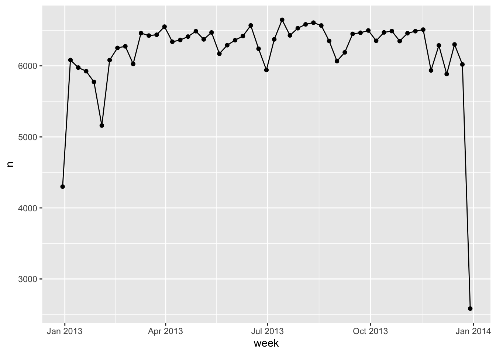
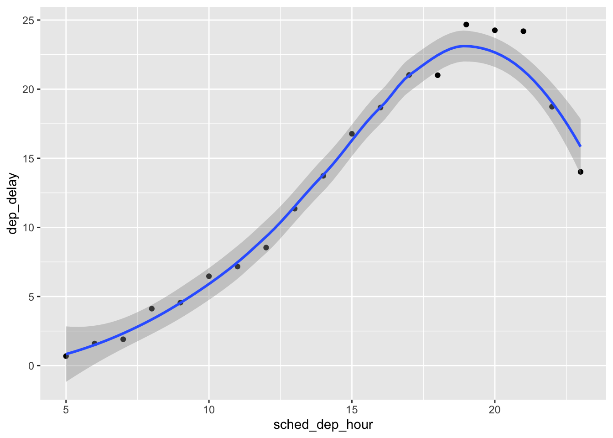
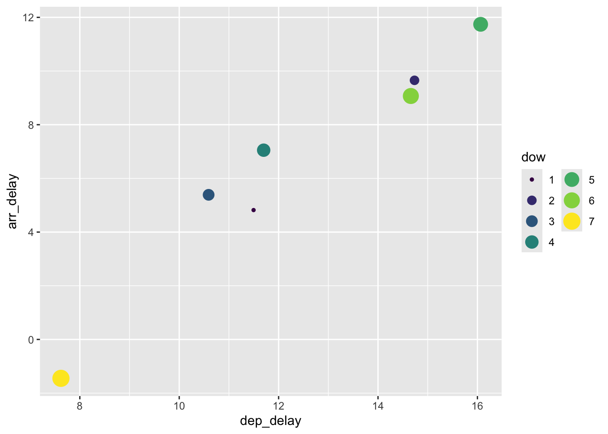

Warning: The `file` argument of `read_csv()` should use `I()` for literal data as of
readr 2.2.0.
# Bad (for example):
read_csv("x,y\n1,2")
# Good:
read_csv(I("x,y\n1,2"))
Rows: 1 Columns: 2
── Column specification ────────────────────────────────────────────────────────
Delimiter: ","
dttm (1): datetime
date (1): date
ℹ Use `spec()` to retrieve the full column specification for this data.
ℹ Specify the column types or set `show_col_types = FALSE` to quiet this message.
# A tibble: 1 × 2
date datetime
<date> <dttm>
1 2022-01-02 2022-01-02 05:12:00
Note
ISO8601 - international standard for writing dates - e.g., May 3 2022 is 2022-05-03. Can include time separated by :. Date and time separated either by space or T - 2022-05-03 16:26 or 2022-05-03T16:26.
Other date-time formats require use of col_types plus col_date() or col_datetime() with date-time format. See ?col_date for all format specifications! - e.g., %Y-%m-%d specifies a date that’s a year, -, month (as number) -, day:
csv <-" date 01/02/15"read_csv(file = csv,col_types =cols(date =col_date(format ="%d/%m/%y") ))
Can do same thing with the four time columns in flights: dep_time, sched_dep_time, arr_time, sched_arr_time:
make_dttm <-function(year, month, day, time){make_datetime(year, month, day, time %/%100, time %%100)}flights_dt <- flights |>filter(!is.na(dep_time), !is.na(arr_time)) |>mutate(dep_time =make_dttm(year, month, day, dep_time),sched_dep_time =make_dttm(year, month, day, sched_dep_time),arr_time =make_dttm(year, month, day, arr_time),sched_arr_time =make_dttm(year, month, day, sched_arr_time) ) |>select(origin, dest, ends_with("delay"), ends_with("time"))# Can visualize distribution of departure times across the year:ggplot(data = flights_dt,mapping =aes(x = dep_time)) +geom_freqpoly(binwidth =86400) # 86400 seconds = 1 day
# within single dayflights_dt |>filter(dep_time <ymd(20130102)) |># "2013-01-02" would work as well ggplot(aes(x = dep_time)) +geom_freqpoly(binwidth =600) # 600 s = 10 min
Note
After call make_datetime(), the variable is no longer stored as hours and minutes—it becomes a full datetime measured internally in seconds. E.g., dep_time is now a POSIXct datetime. Internally, R stores a POSIXct values as: the number of seconds since 1970-01-01 00:00:00 UTC. See as.numeric(make_dttm(2013, 1, 1, 5, 17)) will return large number which is seconds since 1970. For dates, 1 means 1 day; for date-time, 1 means 1 second.
From other types
Switching between date-time and date via as_datetime() and as_date()
# from date to date-timetoday()
[1] "2026-07-31"
as_datetime(today())
[1] "2026-07-31 UTC"
# from date-time to datenow()
[1] "2026-07-31 02:40:57 CEST"
as_date(now())
[1] "2026-07-31"
Date-time components
You can pull out individual parts of the date with the accessor functions year(), month(), mday() (day of the month), yday() (day of the year), wday() (day of the week), hour(), minute(), and second(). These are effectively the opposites of make_datetime().
Plotting individual components by rounding the date to nearby unit of time - floor_date(), round_date(), ceiling_date() - takes vector of dates to adjust and name of unit to round:
# Number of flights per weekflights_dt |>count(week =floor_date(dep_time, unit ="week")) |>ggplot(mapping =aes(x = week, y = n)) +geom_line() +geom_point()

# Distribution of flights across course of day; dep_time - earliest instance of thst day:flights_dt |>mutate(dep_hour = dep_time -floor_date(dep_time, unit ="day")) |>ggplot(aes(x = dep_hour)) +geom_freqpoly(binwidth =60*30)
Don't know how to automatically pick scale for object of type <difftime>.
Defaulting to continuous.
# Alterntively use update():update(datetime, year =2030, month =01, mday =2, hour =2)
[1] "2030-01-02 02:34:56 UTC"
# Big values cause "roll-over"update(ymd("2023-02-01"), mday =30)
[1] "2023-03-02"
Exercises
# Exercise1: How does distribution of flights within day change over course of year?flights_dt |>filter(!is.na(dep_time)) |>mutate(dep_hour =update(dep_time, yday =1)) |>mutate(month =factor(month(dep_time))) |>ggplot(aes(dep_hour, color = month)) +geom_freqpoly(binwidth =60*60)
# Exercise4: How does the average delay time change over the course of a day?flights_dt |>mutate(sched_dep_hour =hour(sched_dep_time)) |>group_by(sched_dep_hour) |>summarize(dep_delay =mean(dep_delay, na.rm =TRUE)) |>ggplot(aes(x = sched_dep_hour, y = dep_delay)) +geom_point() +geom_smooth()
`geom_smooth()` using method = 'loess' and formula = 'y ~ x'

# Exercise5: On what day of the week should you leave if you want to minimize the chance of a delay?flights_dt |>mutate(dow =wday(sched_dep_time)) |>group_by(dow) |>summarize(dep_delay =mean(dep_delay, na.rm =TRUE),arr_delay =mean(arr_delay, na.rm =TRUE)) |>ggplot(aes(x = dep_delay, y = arr_delay, color = dow, size = dow)) +geom_point() +scale_color_viridis_c() +guides(color =guide_legend(ncol =2))

Time spans
Arithmetic with dates - subtraction, addition, division.
Three important classes representing time spans:
Durations - represent exact number of seconds
Periods - represents human units like weeks and months
Intervals - represent a starting and ending point
Durations
In R when subtracting two dates, we get difftime object:
h_age <-today() -ymd("2004-03-22")h_age
Time difference of 8166 days
difftime class object record a time span of seconds, minutes, hours, days, or weeks. Ambiguity problematic - lubridate provides alternative which always uses seconds: the duration:


 and minutes()-1.png)
 and minutes()-2.png)
 and minutes()-3.png)